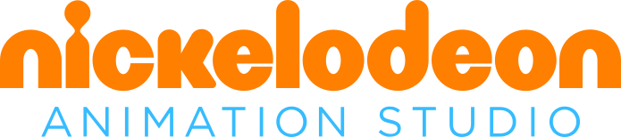
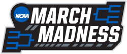
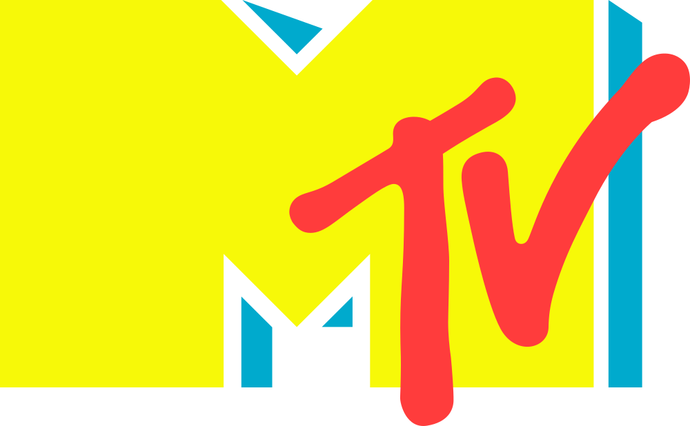
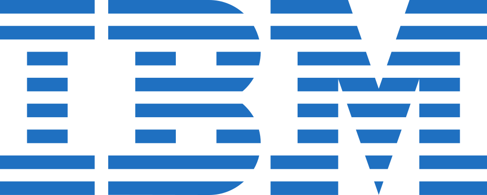
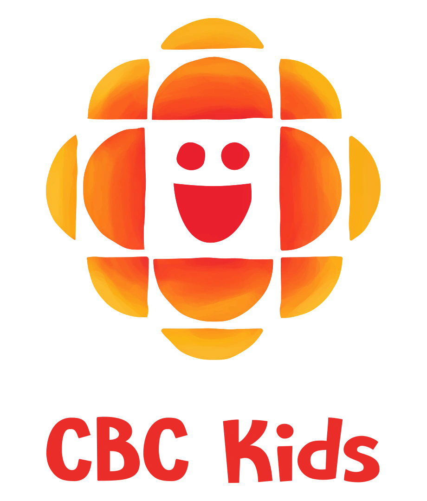
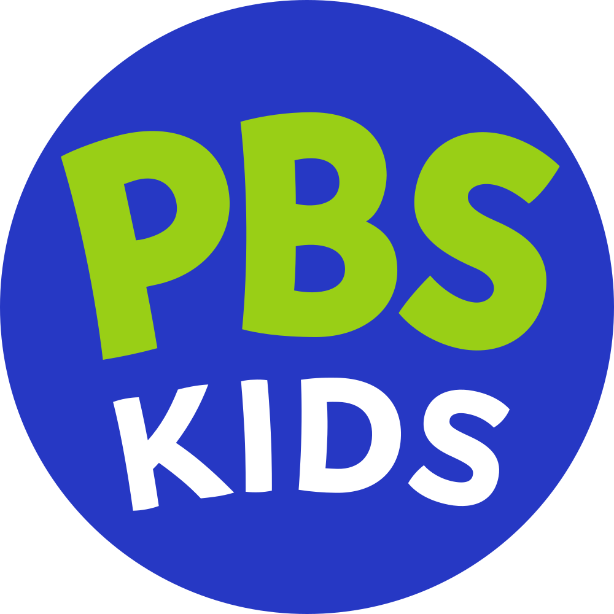
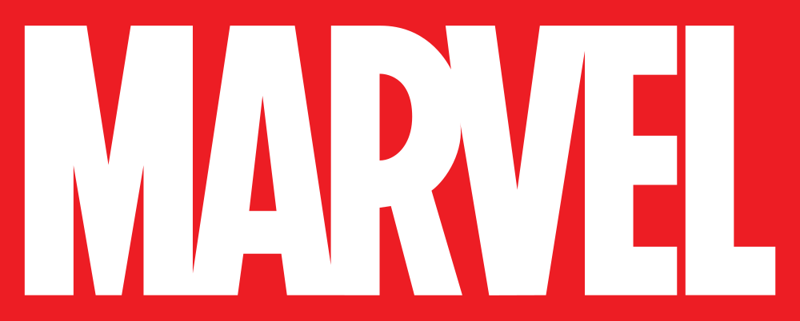

For 15+ years, I’ve worked with teams shipping large-scale platforms turning messy ideas into clear, usable systems.
Recently, my focus has shifted toward AI products and building smarter design processes with it.
I’ve worked with teams at:










I work closely with product and engineering to shape ideas before they harden. My passion is creating software that resonates with users - aligning teams, reducing risk, and creating clarity is the way to get there .
Good design isn’t decoration. It’s a shared understanding between the org and it's users.
Or more specifically:
If you’ve got something interesting in motion, I’m always up for a conversation.
Or more specifically: